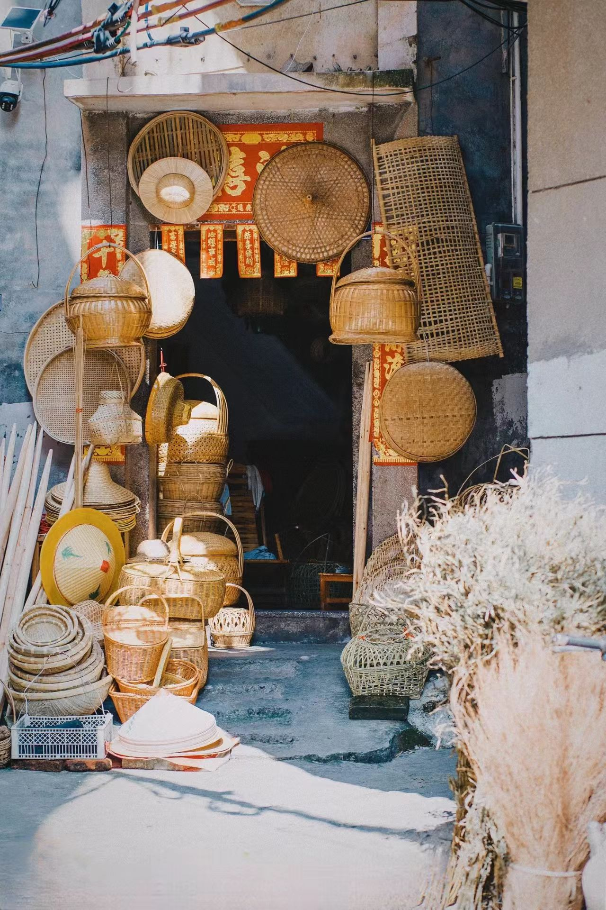
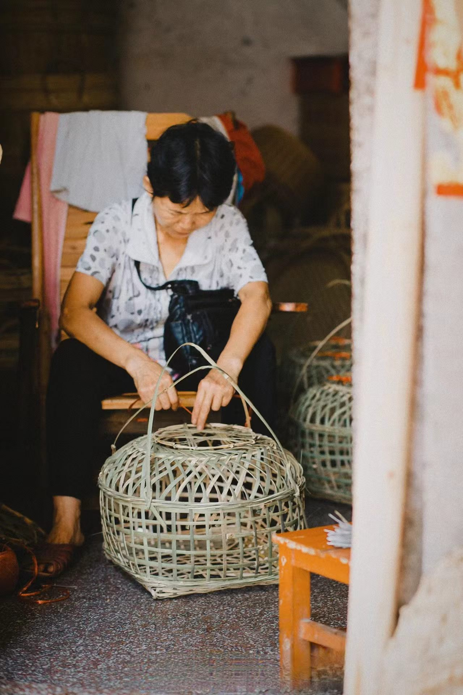
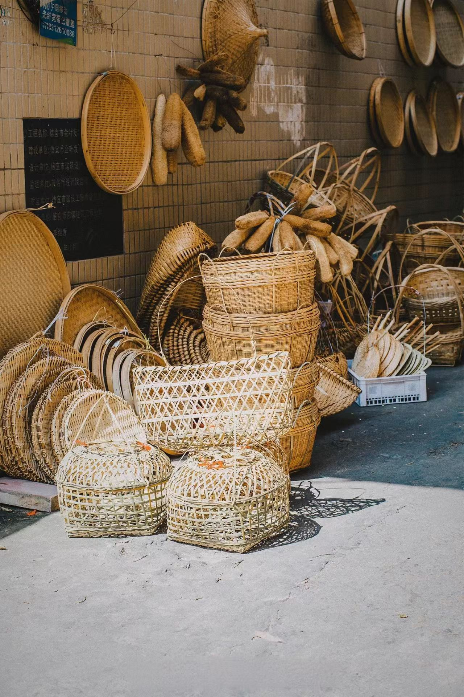

📸 主图介绍
经典东阳精细竹编收纳摆件，选用三年成材毛竹，经分层劈篾打磨至发丝粗细，采用一挑一压交错编织古法，纹样细腻规整。竹编自古贯穿百姓衣食起居，器物兼具实用与清雅东方美感，是低碳可持续的传统手工艺术。
传统竹编精品作品数字画廊



🖼️ 四幅作品数字化解析
四张图片完整覆盖竹编四大创作赛道：民生日用器具、超细篾丝精工、国风装饰挂件、极简现代文创。横向对比直观展示南北竹编工艺差异：南方篾细繁复、纹样精巧；北方粗犷厚重、实用耐用，完整呈现竹编七千余年工艺迭代脉络。
💡 数字化收藏保存小贴士
天然竹篾制品极易受潮发霉、干燥开裂、虫蛀破损，高清扫描+3D数字建模存档可永久留存纹样；手工精工细篾藏品收藏价值远高于机器量产；现代防腐竹材、轻量化文创周边、数字纹样素材库已解决传统竹编保存难、运输易损坏痛点。
传统竹编
竹编是以天然毛竹为原材料的国家级非物质文化遗产，距今已有七千余年完整传承脉络。上古时期先民利用竹材编织容器收纳谷物，秦汉广泛普及至民间生活，唐宋工艺走向精细，明清分化南北数十个特色流派，是贯穿衣食住行、零污染可降解的绿色传统手工艺。
完整遵循选竹、破竹、分层劈篾、煮篾防腐、打磨抛光、纹样编织、收边定型七大古法工序，无需化工辅料即可完成器物制作。编织技法超百种，平纹、人字纹、六角孔、回纹、镂空花等纹样各有吉祥寓意，一竹千变，尽显东方简约清雅美学。
传统竹编行业数字化数据分析
全国竹编文化传承地域分布占比
竹编手工爱好者受众年龄分层调研
🎋 竹编千年文化内核与当代数字化价值
竹在中国传统文化象征君子气节、节节高升，竹编器物融入日常自带清雅淡泊的文人意境。传统竹篮、竹席、竹扇、竹笼承载农耕民俗记忆，镂空纹样寓意通透顺遂。如今数字化全面赋能竹编产业：国风软装文创、线下DIY手工工坊、线上纹样数字课程、乡村竹编文旅基地、海外东方美学巡展同步落地，成为低碳国风标志性非遗IP。
🛠️ 全套古法竹编工具体系
成材毛竹、劈竹刀、分层篾刀、煮篾大锅、打磨砂石、定型竹模、防腐蜂蜡、高清扫描设备、3D竹纹建模设计软件
🎍 南北两大工艺体系
南方竹编（东阳/泉州）篾丝超细、镂空繁复、装饰性强；北方竹编（四川/湖南）篾条宽厚、结实耐用、侧重民生实用器具
📜 完整千年传承发展脉络
新石器农耕起源→秦汉全民普及→唐宋精细工艺成型→明清多流派繁荣→近现代技艺断层修复→当代绿色文创数字化创新
🌟 数字化创新应用场景
新中式家居软装、线下亲子手工DIY工坊、线上美育纹样课程、竹编数字纹样素材、乡村文旅竹编产业园、海外国风艺术巡回展
💬 用户数字化留言交流区